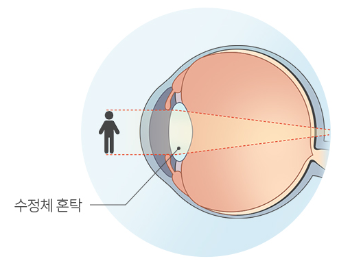

Cataract
About

백내장
투명한 수정체가 혼탁해져 시야가 흐려지는 질환입니다.
눈 속 수정체는 빛을 모아 망막에 초점을 맞춥니다. 수정체가 탁해지면 사물이 뿌옇고 색이 바래 보일 수 있습니다. 노안과 함께 생길 수 있지만 서로 다른 변화입니다. 수정체와 망막 상태, 일상의 불편을 함께 살펴 치료를 정합니다.

좌우로 움직여 비교해 보세요. 이해를 돕기 위한 연출 이미지입니다.
Issue
백내장
나이가 들수록 수정체 혼탁이 나타날 가능성이 높아집니다.
초기에는 불편이 적어 변화가 서서히 느껴질 수 있습니다.
독서·운전 등 생활의 어려움이 수술 상담의 중요한 기준입니다.
안경으로 충분한지, 수술이 필요한지는 검사 후 판단합니다.
주요수술 건수 비교 · 2023년
단위: 건2024년 12월 발표된 공단 원문 통계입니다. 수술 건수이며 환자 수가 아닙니다.
연도별 백내장 수술 건수
단위: 건연도에 따라 증감합니다. 특정 연령대만의 수술 건수를 뜻하지 않습니다.
나이보다 현재 눈 상태와 생활 속 불편을 함께 살펴보세요.
자료: 미국 국립안연구소 · 백내장
Causes of
백내장
원인과 위험요인
노화, 전신 질환·약물, 외상·선천적 요인 등을 함께 살펴봅니다.

노화
수정체 단백질의 변화가 쌓여 혼탁이 생깁니다.

전신 질환·약물
당뇨병이나 장기간의 스테로이드 사용 등이 영향을 줄 수 있습니다.
외상·선천적 요인
눈 외상이나 유전·태아기 요인으로 발생하기도 합니다.
이런 증상이 있으신가요?
평소 느꼈던 눈의 불편을 선택해 주세요.
눈의 변화를 살피고,
필요한 진료를 안내합니다.
체크 개수는 진단 기준이 아닙니다. 정확한 원인은 검사를 통해 확인합니다.
증상을 1개 이상 선택해 주세요.